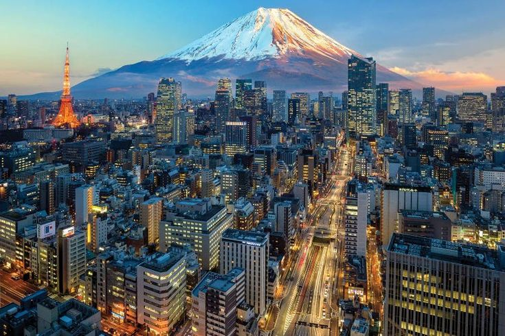
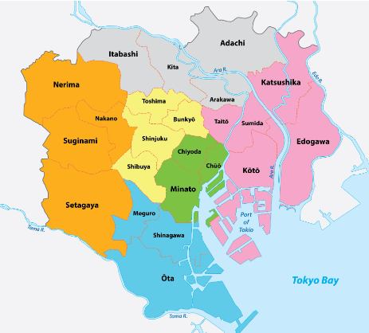
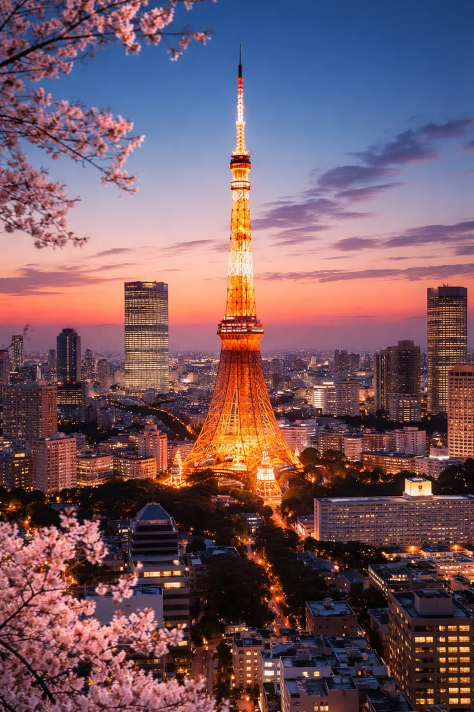

Sejarah

Tokyo bermula dari sebuah desa nelayan kecil bernama Edo pada abad ke-12, sebelum akhirnya berkembang menjadi pusat pemerintahan Keshogunan Tokugawa pada tahun 1603. Kota ini bertransformasi secara radikal pada era Restorasi Meiji tahun 1868 ketika Kaisar memindahkan ibu kota dari Kyoto ke Edo, lalu mengubah namanya menjadi Tokyo yang berarti "Ibu Kota Timur". Setelah resmi menjadi entitas metropolitan pada tahun 1943 dan sempat hancur akibat Perang Dunia II, Tokyo berhasil bangkit melalui modernisasi pesat—termasuk suksesnya penyelenggaraan Olimpiade 1964—hingga kini tumbuh menjadi salah satu wilayah megapolitan terpadat dan pusat ekonomi-teknologi terbesar di dunia.
Geografis

Tokyo terletak di wilayah Kantō, bagian tengah Pulau Honshu, Jepang, dengan posisi strategis di ujung utara Teluk Tokyo.
Secara geografis, wilayah metropolitan ini berbatasan dengan Prefektur Saitama di utara, Prefektur Chiba di timur yang dipisahkan oleh Sungai Edogawa, Prefektur Kanagawa di selatan, serta Prefektur Yamanashi di sebelah barat. Letak astronomisnya berada di sekitar koordinat 35°41′22″ LU dan 139°41′30″ BT,
menjadikannya pusat administratif, ekonomi, dan politik utama bagi negara Jepang.
Topografi wilayah Tokyo menunjukkan kontras yang jelas antara area timur dan barat, serta mencakup wilayah kepulauan yang luas. Bagian timur Tokyo merupakan kawasan dataran rendah yang padat penduduk (dikenal sebagai Dataran Kanto), tempat berdirinya 23 distrik khusus dan pusat pemerintahan. Sebaliknya, bagian barat atau Wilayah Tama didominasi oleh lanskap berbukit dan pegunungan yang asri. Selain daratan utama di Pulau Honshu, wilayah administratif Tokyo juga mencakup rantai pulau terpencil di Samudra Pasifik, yaitu Kepulauan Izu dan Kepulauan Ogasawara yang membentang hingga ratusan kilometer ke arah selatan.
Wisata
Tokyo menawarkan perpaduan wisata yang lengkap, mulai dari ikon modern seperti persimpangan sibuk Shibuya Crossing, pemandangan kota 360 derajat di Shibuya Sky, serta menara megah Tokyo Tower dan Tokyo Skytree.
Selain modernitas, Anda bisa menjelajahi sisi budaya di Kuil Senso-ji yang bersejarah dan Istana Kekaisaran Tokyo, hingga menikmati hiburan populer di pusat elektronik Akihabara serta keseruan kelas dunia di Tokyo Disneyland dan Tokyo DisneySea.
Tokyo Tower

Tokyo Tower adalah menara komunikasi dan observasi setinggi 332,9 meter yang terletak di Minato, Tokyo, Jepang, yang terinspirasi dari desain Menara Eiffel dengan ciri khas warna oranye internasional dan putih untuk keselamatan penerbangan. Sebagai salah satu ikon kota paling populer, menara ini berfungsi sebagai pemancar siaran radio dan televisi sekaligus destinasi wisata yang menawarkan panorama megah kota Tokyo hingga Gunung Fuji dari dua dek observasinya di ketinggian 150 meter dan 250 meter. Di bagian dasar menara, terdapat kompleks FootTown yang menyediakan berbagai toko suvenir, restoran, serta pusat hiburan digital interaktif bagi para pengunjung.
Tokyo Skytree
.jpg)
Tokyo Skytree adalah menara pemancar dan observasi setinggi 634 meter yang terletak di Sumida, Tokyo, Jepang, menjadikannya menara berdiri bebas tertinggi di dunia. Selesai dibangun pada tahun 2012, ikon arsitektur modern ini memiliki dua dek observasi utama, yaitu Tembo Deck di ketinggian 350 meter dan Tembo Galleria di 450 meter, yang menawarkan panorama kota 360 derajat hingga Gunung Fuji saat cuaca cerah. Menara ini juga terintegrasi langsung dengan kompleks komersial Tokyo Skytree Town yang mencakup pusat perbelanjaan Solamachi, akuarium, dan planetarium.